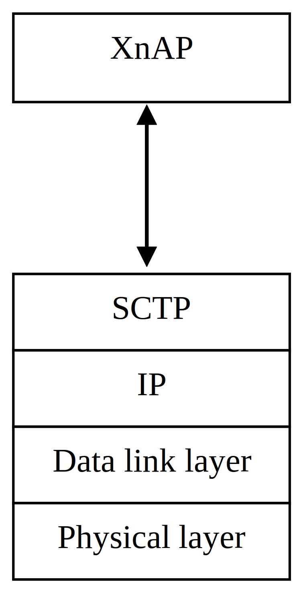
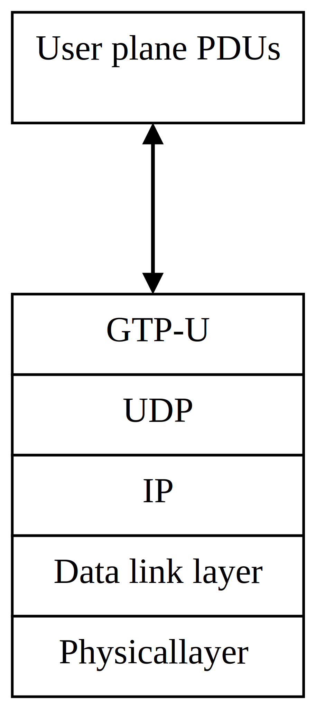

3GPP TS 38.420 V17.2.0 (2022-09)
Technical Specification
3rd Generation Partnership Project;
Technical Specification Group Radio Access Network;
NG-RAN;
Xn general aspects and principles
(Release 17)
The present document has been developed within the 3rd Generation
Partnership Project (3GPP TM) and may be further elaborated
for the purposes of 3GPP.
The present document has not been subject to any approval process by the
3GPP Organizational Partners and shall not be implemented.
This Specification is provided for future development work within 3GPP
only. The Organizational Partners accept no liability for any use of
this Specification.
Specifications and Reports for implementation of the 3GPP TM
system should be obtained via the 3GPP Organizational Partners'
Publications Offices.
3GPP
Postal address
3GPP support office address
650 Route des Lucioles - Sophia Antipolis
Valbonne - FRANCE
Tel.: +33 4 92 94 42 00 Fax: +33 4 93 65 47 16
Internet
http://www.3gpp.org
Copyright Notification
No part may be reproduced except as authorized by written
permission.
The copyright and the foregoing restriction extend to reproduction in
all media.
© 2022, 3GPP Organizational Partners (ARIB, ATIS, CCSA, ETSI, TSDSI, TTA, TTC).
All rights reserved.
UMTS™ is a Trade Mark of ETSI registered for the benefit of its members
3GPP™ is a Trade Mark of ETSI registered for the benefit of its
Members and of the 3GPP Organizational Partners
LTE™ is a Trade Mark of ETSI registered for the benefit of its Members
and of the 3GPP Organizational Partners
GSM® and the GSM logo are registered and owned by the GSM Association
Foreword 5
1 Scope 6
2 References 6
3 Definitions and abbreviations 6
3.1 Definitions 6
3.2 Abbreviations 7
4 General aspects 7
4.1 Introduction 7
4.2 Xn interface general principles 7
4.3 Xn interface specification objectives 7
4.4 Xn interface capabilities 7
5 Functions of the Xn interface 8
5.1 General 8
5.2 Functions of Xn-C 8
5.2.1 Xn-C interface management and error handling functions 8
5.2.1.1 General 8
5.2.1.2 Xn Setup function 8
5.2.1.3 Error Indication function 8
5.2.1.4 Xn reset function 8
5.2.1.5 Xn configuration data update function 8
5.2.1.6 Xn removal function 8
5.2.2 UE mobility management functions 8
5.2.2.1 Handover preparation function 8
5.2.2.2 Handover cancellation function 8
5.2.2.3 Retrieve UE Context function 9
5.2.2.4 RAN Paging function 9
5.2.2.5 Data Forwarding control function 9
5.2.2.6 Handover Success Indication Function 9
5.2.2.7 Conditional Handover cancellation function 9
5.2.3 Dual connectivity function 9
5.2.4 Energy saving function 9
5.2.5 Resource coordination function 9
5.2.6 Secondary RAT Data Volume Report function 9
5.2.7 Trace function 9
5.2.8 Load management function 9
5.2.9 Data exchange for self-optimisation function 9
5.2.10 IAB support function 10
5.2.10.1 F1-C Traffic Transfer function 10
5.2.10.2 IAB Transport Migration function 10
5.2.10.3 IAB Resource Coordination function 10
5.2.11 Small data transmission function 10
5.2.11.1 General 10
5.2.11.2 Partial UE Context Transfer function 10
5.2.12 QMC support function 10
5.2.13 MBS management support function 10
5.3 Functions of Xn-U 10
5.3.1 Data transfer function 10
5.3.2 Flow control function 10
5.3.3 Assistance information function 11
5.3.4 Fast retransmission function 11
6 Xn interface procedures 11
6.1 General 11
6.2 Control plane protocol procedures 11
6.2.1 Mobility management procedures 11
6.2.2 Dual Connectivity procedures 11
6.2.3 Global procedures 12
6.2.4 Interface Management procedures 12
6.2.5 Energy saving procedures 12
6.2.6 Resource coordination procedures 12
6.2.7 UE Tracing procedures 12
6.2.8 Load management procedures 12
6.2.9 Data exchange for self-optimisation procedures 13
6.2.10 IAB procedures 13
6.2.11 MBS Management procedures 13
6.2.12 Small data transmission procedures 13
6.2.13 QMC support procedures 13
6.3 User plane protocol procedures 13
7 Xn interface protocol structure 14
7.1 Xn Control Plane 14
7.2 Xn User Plane 14
8 Other Xn interface specifications 16
8.1 NG-RAN Xn interface: Xn layer 1 (TS 38.421) 16
8.2 NG-RAN Xn interface: Xn signalling transport (TS 38.422) 16
8.3 NG-RAN Xn interface: Xn application protocol (XnAP) (TS 38.423) 16
8.4 NG-RAN Xn interface: Xn data transport (TS 38.424) 16
8.5 NG-RAN Xn interface: NR user plane protocol (TS 38.425) 16
8.6 NG-RAN Xn interface: PDU Session User Plane Protocol (TS 38.415) 16
8.7 Summary of NG-RAN Xn interface Technical Specifications 16
Annex A (informative): Change history 18
This Technical Specification has been produced by the 3rd Generation Partnership Project (3GPP).
The contents of the present document are subject to continuing work within the TSG and may change following formal TSG approval. Should the TSG modify the contents of the present document, it will be re-released by the TSG with an identifying change of release date and an increase in version number as follows:
Version x.y.z
where:
x the first digit:
1 presented to TSG for information;
2 presented to TSG for approval;
3 or greater indicates TSG approved document under change control.
y the second digit is incremented for all changes of substance, i.e. technical enhancements, corrections, updates, etc.
z the third digit is incremented when editorial only changes have been incorporated in the document.
The present document is an introduction to the TSG RAN TS 38.42x series of Technical Specifications that define the Xn interface. It is an interface for the interconnection of two NG-RAN nodes within the NG-RAN architecture (TS 38.401 [2]).
The following documents contain provisions which, through reference in this text, constitute provisions of the present document.
- References are either specific (identified by date of publication, edition number, version number, etc.) or non‑specific.
- For a specific reference, subsequent revisions do not apply.
- For a non-specific reference, the latest version applies. In the case of a reference to a 3GPP document (including a GSM document), a non-specific reference implicitly refers to the latest version of that document in the same Release as the present document.
[1] 3GPP TR 21.905: "Vocabulary for 3GPP Specifications".
[2] 3GPP TS 38.401: "NG-RAN; Architecture description".
[3] 3GPP TS 38.421: "NG-RAN; Xn layer 1".
[4] 3GPP TS 38.422: "NG-RAN; Xn signalling transport".
[5] 3GPP TS 38.423: "NG-RAN; Xn Application Protocol (XnAP)".
[6] 3GPP TS 38.424: "NG-RAN; Xn data transport".
[7] 3GPP TS 38.425: "NG-RAN; NR user plane protocol".
[8] 3GPP TS 38.300: "NR; Overall Description; Stage 2".
[9] 3GPP TS 37.340: "NR; Multi-connectivity; Overall description; Stage-2".
[10] 3GPP TS 38.415: "PDU Session User Plane protocol".
[11] 3GPP TS 29.281: "General Packet Radio System (GPRS) Tunnelling Protocol User Plane (GTPv1-U)".
For the purposes of the present document, the terms and definitions given in 3GPP TR 21.905 [1] and the following apply. A term defined in the present document takes precedence over the definition of the same term, if any, in 3GPP TR 21.905 [1].
Boundary IAB-node: as defined in TS 38.401 [2].
corresponding node: as defined in TS 38.425 [7].
F1-terminating IAB-donor-CU: as defined in TS 38.401 [2].
IAB-DU: as defined in TS 38.300 [8].
IAB-MT: as defined in TS 38.300 [8].
Non-F1-terminating IAB-donor-CU: as defined in TS 38.401 [2].
NG-RAN node: as defined in TS 38.300 [8].
secondary node: as defined in TS 37.340 [9].
For the purposes of the present document, the abbreviations given in 3GPP TR 21.905 [1] and the following apply. An abbreviation defined in the present document takes precedence over the definition of the same abbreviation, if any, in 3GPP TR 21.905 [1].
IAB Integrated Access and Backhaul
MBS Multicast Broadcast Service
QMC QoE Measurement Collection
QoE Quality of Experience
SCTP Stream Control Transmission Protocol
Xn-C Xn Control plane
Xn-U Xn User plane
The interface allowing to interconnect NG-RAN nodes with each other is referred to as the Xn interface.
The general principles for the specification of the Xn interface are as follows:
- the Xn interface is open;
- the Xn interface supports the exchange of signalling information between two NG-RAN nodes, and the forwarding of PDUs to the respective tunnel endpoints;
- from a logical standpoint, the Xn is a point-to-point interface between two NG-RAN nodes. A point-to-point logical interface should be feasible even in the absence of a physical direct connection between the two NG-RAN nodes.
The Xn interface specifications facilitate the following:
- inter-connection of NG-RAN nodes supplied by different manufacturers;
- support of continuation between NG-RAN nodes of the NG-RAN services offered via the NG interface;
- separation of Xn interface Radio Network functionality and Transport Network functionality to facilitate introduction of future technology.
The Xn interface supports:
- procedures to support intra-NG-RAN mobility;
- procedures to support dual connectivity between NG-RAN nodes.
The following clauses describe the functions supported in Xn interface.
These functions allow for managing of signalling associations between NG-RAN nodes, surveying the Xn interface and recovering from errors.
This function allows for the initial setup of an Xn interface between two NG-RAN nodes, including exchange of application level data.
This function allows the reporting of general error situations on application level.
This function allows an NG-RAN node to inform a second NG-RAN node that it has recovered from an abnormal failure and that either all or some of the contexts (except the application level data) related to the first node and stored in the second shall be deleted, and the associated resources released.
This function allows two NG-RAN nodes to update application level data at any time.
This function allows two NG-RAN nodes to remove the respective Xn interface.
This function allows the exchange of information between source and target NG-RAN nodes in order to initiate the handover of a certain UE to the target.
This function allows informing an already prepared target NG-RAN node that a prepared handover will not take place. It allows releasing the resources allocated during a preparation.
The Retrieve UE context function is used for a NG-RAN node to retrieve UE context from another one.
The RAN paging function allows a NG-RAN node to initiate the paging for a UE in the inactive state.
The data forwarding control function allows establishing and releasing transport bearers between source and target NG-RAN nodes for data forwarding.
This function allows informing a source NG-RAN node that the UE has successfully accessed a target NG-RAN node.
This function allows informing a source NG-RAN node that resources reserved for candidate target cell(s) during a conditional handover preparation are about to be released by the target NG-RAN node.
The dual connectivity function enables usage of additional resources in a secondary node in the NG-RAN.
This function enables decreasing energy consumption by indication of cell activation/deactivation over the Xn interface.
This function enables coordination of cell resource usage between two NG-RAN nodes.
This function enables the NG-RAN node to report Secondary RAT usage data information in case of MR-DC with 5GC, either with a dedicated procedure or by including Secondary RAT usage data information in other messages.
The Trace function provides means to control trace sessions for a UE over Xn interface.
This function allows exchanging resource status and traffic load information between NG-RAN nodes, such that the NG-RAN node can control the traffic load appropriately.
This function allows two NG-RAN nodes to exchange information in order to support self-optimization functionality.
This function is used to deliver F1-C traffic between the M-NG-RAN node and the S-NG-RAN node serving a dual-connected IAB-node, where the F1-C traffic is either received from the IAB-node or sent to the IAB-node.
This function allows the exchange of information between the F1-terminating IAB-donor-CU and the non-F1-terminating IAB-donor-CU of a boundary IAB-node, for the purpose of managing the migration of the boundary and descendant IAB-node traffic between the topologies managed by the two IAB-donor-CUs.
This function is used to exchange information between the F1-terminating IAB-donor-CU and the non-F1-terminating IAB-donor-CU of a boundary IAB-node in order to support resource multiplexing between the IAB-MT and the IAB-DU of the boundary IAB-node.
This function supports small data transmission sessions in RRC_INACTIVE both with and without anchor relocation, in case the UE is served by a new NG-RAN node.
The Partial UE Context Transfer function is used for the last serving NG-RAN node to provide part of the UE Context to the receiving gNB.
The QMC function provides means to support the mobility of QMC sessions over the Xn interface.
This function is used to support the management of MBS Sessions, including the addition of MBS related information in interface management and mobility procedures, and the support of RAN Multicast paging.
The data transfer function allows the transfer of data between NG-RAN nodes to support dual connectivity or mobility operation.
The flow control function enables a NG-RAN node receiving user plane data from a second NG-RAN node to provide feedback information associated with the data flow.
The assistance information function enables a NG-RAN node receiving user plane data from a second NG-RAN node to provide assistance information to the second node (e.g. related to radio conditions).
The fast retransmission function provides coordination between PDCP-hosting node and corresponding node in case of outage in one of the nodes, to enables the node in good RF conditions to handle data previously forwarded to the node in outage.
The Xn interface supports procedures over the control plane (Xn-C) and user plane (Xn-U).
The mobility management procedures are used to manage the UE mobility in Connected or RRC_Inactive modes:
- Handover Preparation
- Handover Cancel
- SN Status Transfer
- Retrieve UE Context
- RAN Paging
- Xn-U Address Indication
- UE Context Release
- Handover Success Indication
- Conditional Handover Cancel
- Retrieve UE Context Confirm
The dual connectivity procedures are used to add, modify and releases resources for the operation of Dual Connectivity:
- S-NG-RAN-node Addition Preparation
- S-NG-RAN-node Reconfiguration Completion
- M-NG-RAN-node initiated S-NG-RAN-node Modification Preparation
- S-NG-RAN-node initiated S-NG-RAN-node Modification
- M-NG-RAN-node initiated S-NG-RAN-node Release
- S-NG-RAN-node initiated S-NG-RAN-node Release
- S-NG-RAN-node Counter Check
- RRC Transfer
- Notification Control Indication
- Activity Notification
- Secondary RAT Data Usage Report
- Conditional PSCell Change Cancel
The global procedures are used to exchange configuration level data between two NG-RAN nodes, or to remove Xn connectivity between two NG-RAN nodes in a controlled manner:
- Xn Setup
- NG-RAN-node Configuration Update
- Xn Removal
The interface management procedures are used to align resources between two NG-RAN nodes in the event of failures, and to report detected protocol errors:
- Reset
- Error Indication
- Cell Activation procedure: enables an NG-RAN node to request the activation of a previously deactivated cell hosted in another NG-RAN node.
- E-UTRA - NR Cell Resource Coordination procedure: enables an ng-eNB and a gNB to interact for resource coordination purposes.
The following procedures are used to trace the UE:
- Trace Start procedure
- Deactivate Trace procedure
- Cell Traffic Trace
The load management procedures are used by NG-RAN nodes to indicate resource status, overload and traffic load to each other.
- Resource Status Reporting Initiation
- Resource Status Reporting
The data exchange for self-optimisation procedures are used to transfer failure and mobility related information among NG-RAN nodes to enable self-optimisation
- Failure Indication
- Handover report
- Mobility Settings Change
- Access and Mobility Indication
- SCG Failure Information Report
- SCG Failure Transfer
The IAB procedures are used to enable the transfer of F1/non-F1 traffic for IAB, to exchange information between the F1-terminating IAB-donor-CU and the non-F1-terminating IAB-donor-CU of a boundary IAB-node, to enable the delivery of F1-C traffic between the M-NG-RAN node and the S-NG-RAN node serving a dual-connected non-boundary IAB-node, and to exchange resource multiplexing related information between the F1-terminating IAB-donor-CU and the non-F1-terminating IAB-donor-CU of a boundary IAB-node:
- F1-C Traffic Transfer
- IAB Transport Migration Management
- IAB Transport Migration Modification
- IAB Resource Coordination
The MBS management procedures are used to manage the MBS Session:
- RAN Multicast Group Paging procedure
- Partial UE Context Transfer: enables exchange of information between NG-RAN nodes for SDT transmission without anchor relocation
Small data transmission is also supported by the following procedures:
- RRC Transfer
- Retrieve UE Context Confirm
The following procedures are used to transfer QMC configuration and session information to the target NG-RAN node during a UE’s intra-system intra-RAT mobility:
- Handover Preparation
- Retrieve UE Context
The user plane protocol procedures are used to exchange user plane information between Xn-U protocol peers:
- Transfer of Downlink User Data procedure: enables the node hosting the NR PDCP entity to provide user plane information to the corresponding node.
- Downlink Data Delivery Status procedure: enables the corresponding node to provide feedback to the node hosting the NR PDCP entity.
- Transfer of Assistance Information: enables the corresponding node to provide assistance information to the node hosting the NR PDCP entity.
- Transfer of PDU Session Information procedure: enables an NG-RAN node to provide user plane information associated with the forwarding of data towards a peer NG-RAN node, when using PDU session tunnels.
The control plane protocol stack of the Xn interface is shown on Figure 7.1-1. The transport network layer is built on IP transport. For the reliable transport of signalling messages, SCTP is added on top of IP. The application layer signalling protocol is referred to as XnAP (Xn Application Protocol).

Figure 7.1-1: Xn Interface Control Plane
The Xn user plane (Xn-U) interface is defined between two NG-RAN nodes. The Xn-U interface provides non-guaranteed delivery of user plane PDUs between two NG-RAN nodes.
The protocol stack for Xn-U is shown in Figure 7.2-1.

Figure 7.2-1: Xn-U protocol structure
The user plane packets conveyed by GTP-U may be PDCP PDUs (e.g. in case of dual connectivity), PDCP SDUs (e.g. in case of DRB level data forwarding), or SDAP SDUs (e.g. in PDU Session level data forwarding).
User plane protocol messages (as defined in TS 38.425 [7] and TS 38.415 [10]) are carried by container fields in the GTP-U extension header as specified in TS 29.281 [11]. A single GTP-U packet may carry a user plane packet and/or a user plane protocol message. The mapping between container fields and Xn user plane protocol procedures and functions is described in Table 7.2-1.
Table 7.2-1: Mapping between container fields and Xn user plane procedures / functions
| Xn-U Function | Container Type | Xn UP Protocol Procedure |
|---|---|---|
| Data transfer | NR RAN Container, as per TS 29.281 [11] (Note 1) | Transfer of Downlink User Data, TS 38.425 [7] |
| PDU Session Container, as per TS 29.281 [11] (Note 2) | Transfer of DL PDU Session Information, TS 38.415 [10] Transfer of UL PDU Session Information, TS 38.415 [10] |
|
| No container (Note 3) | NA | |
| Flow control | NR RAN Container as per TS 29.281 [11] (Note 4) | Downlink Data Delivery Status, TS 38.425 [7] Transfer of Downlink User Data, TS 38.425 [7] |
| Fast retransmission | NR RAN Container as per TS 29.281 [11] (Note 4) | Downlink Data Delivery Status, TS 38.425 [7] Transfer of Downlink User Data, TS 38.425 [7] |
| Assistance information | NR RAN Container as per TS 29.281 [11] (Note 4) | Transfer of Assistance Information, TS 38.425 [7] |
Note 1: optionally used in Dual Connectivity DL data transfer. Note 2: in case of PDU Session level forwarding only. Note 3: all other cases of data transfer when no other Xn-U functionality is required Note 4: optionally used in Dual Connectivity |
||
TS 38.421 [3] specifies the physical layer technologies that may be used to support the Xn interface.
TS 38.422 [4] specifies how the XnAP signalling messages are transported over Xn.
TS 38.423 [5] specifies the radio network layer signalling procedures of the control plane between NG-RAN nodes.
TS 38.424 [6] specifies the standards for user data transport protocols over the NG-RAN Xn interface.
TS 38.425 [7] specifies the user plane protocol procedures for dual connectivity over the NG-RAN Xn interface.
TS 38.415 [10] specifies the user plane protocol procedures for data forwarding using PDU Session tunnels over the NG-RAN Xn interface.
The relationship between the technical specifications that define the NG-RAN Xn interface is shown in Figure 8.7-1.
Figure 8.7-1: Xn Interface Technical Specifications
Annex A (informative):
Change history
| Change history | |||||||
| Date | Meeting | TDoc | CR | Rev | Cat | Subject/Comment | New version |
| 2017-04 | R3#95b | R3-171313 | TS skeleton | 0.0.1 | |||
| 2017-05 | R3#96 | R3-171807 | Change of structure of clause 5 | 0.0.2 | |||
| 2017-05 | R3#96 | R3-171967 | Further skeleton change following agreements at R3#96 Initial text for clauses 4, 7 and 8 (R3-171966) Functions from R3-171927 Add change history |
0.1.0 | |||
| 2017-07 | R3 NR AH | R3-172636 | TP from R3-172596 | 0.2.0 | |||
| 2017-09 | R3#97 | R3-173453 | TPs from R3-173320 and R3-173321 | 0.3.0 | |||
| 2017-10 | R3#97bis | R3-174241 | TP from R3-173636 | 0.4.0 | |||
| 2017-12 | R3#98 | R3-175057 | TPs from R3-174451 and R3-174764 | 0.5.0 | |||
| 2018-02 | R3 NR AH 1801 | R3-180653 | TP from R3-180543 | 0.6.0 | |||
| 2018-03 | R3#99 | R3-181590 | TP from R3-181388 | 0.7.0 | |||
| 2018-04 | R3#99bis | R3-182526 | TP from R3-181866 | 0.8.0 | |||
| 2018-06 | R3#100 | R3-183595 | TPs from R3-183098, R3-182719 and R3-183375 | 0.9.0 | |||
| 2018-06 | RP#80 | RP-180687 | Presentation to RAN for one step approval | 1.0.0 | |||
| 2018-06 | RAN#80 | - | - | - | - | Specification approved at TSG-RAN and placed under change control | 15.0.0 |
| 2018-09 | RAN#81 | RP-181922 | 0001 | 2 | F | NR Corrections (38.420 Baseline CR covering RAN3-101 agreements) | 15.1.0 |
| 2018-12 | RAN#82 | RP-182446 | 0004 | 1 | F | Rapporteur’s CR for TS 38.420 | 15.2.0 |
| 2018-12 | RAN#82 | RP-182447 | 0006 | - | B | Introduction of Data Volume Reporting for MR-DC | 15.2.0 |
| 2018-12 | RAN#82 | RP-182447 | 0007 | - | F | Rename the Data Forwarding Address Indication procedure | 15.2.0 |
| 2020-07 | RAN#88-e | RP-201075 | 0008 | 8 | B | Baseline CR for introducing Rel-16 NR mobility enhancement | 16.0.0 |
| 2020-07 | RAN#88-e | RP-201082 | 0018 | 3 | B | BLCR to 38.420: Addition of MDT feature | 16.0.0 |
| 2020-07 | RAN#88-e | RP-201082 | 0019 | 3 | B | BLCR to 38.420: Addition of SON feature | 16.0.0 |
| 2022-03 | RAN#95-e | RP-220222 | 0020 | 7 | B | CR on CP-UP separation for Rel-17 IAB | 17.0.0 |
| 2022-03 | RAN#95-e | RP-220224 | 0022 | 3 | B | BL CR to TS38.420 | 17.0.0 |
| 2022-03 | RAN#95-e | RP-220218 | 0023 | 2 | B | CPAC BL CR to TS 38.420 | 17.0.0 |
| 2022-03 | RAN#95-e | RP-220233 | 0024 | 2 | B | RA-SDT BLCR to TS 38.420 | 17.0.0 |
| 2022-03 | RAN#95-e | RP-220236 | 0025 | 1 | B | Addition of the Retrieve UE Context Confirm procedure [InterMNResume] | 17.0.0 |
| 2022-03 | RAN#95-e | RP-220229 | 0026 | - | B | BLCR to 38.420: Support of QoE Measurement Collection for NR | 17.0.0 |
| 2022-06 | RAN#96 | RP-221141 | 0027 | - | F | Alignment with rel-17 changes in XnAP | 17.1.0 |
| 2022-06 | RAN#96 | RP-221134 | 0028 | 1 | F | Alignment with rel-17 changes in XnAP | 17.1.0 |
| 2022-06 | RAN#96 | RP-221136 | 0029 | - | F | Alignment with rel-17 changes in XnAP | 17.1.0 |
| 2022-06 | RAN#96 | RP-221128 | 0030 | 1 | F | IAB Rel-17 Corrections | 17.1.0 |
| 2022-06 | RAN#96 | RP-221143 | 0031 | - | F | QoE Rel-17 Corrections | 17.1.0 |
| 2022-09 | RAN#97-e | RP-222183 | 0032 | 1 | F | Correction to 38.420 for IAB | 17.2.0 |